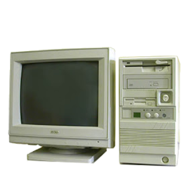

| PC-XT | PC-AT | PC-ATX |
|---|---|---|
|
La era de las PC-XT inicio junto con la salida de la IBM PC, muchos clones basados en el diseño de la IBM PC y su sucesor el IBM PC-XT se vendieron entre los años 1981 a 1983, usaron procesadores desde el intel 8088 hasta el intel 80286 |

La era de las PC-AT inicio con la salida de la IBM PC-AT en 1984 que al igual que sus antecesoras dio lugar a toda una gama de pc clonicas, apartir de esta generacion se comenzaron a abandonar los monitores monocromos, usaron procesadores desde el intel 80286 hasta en algunos casos intel pentium III |
esto es una pc-atx |